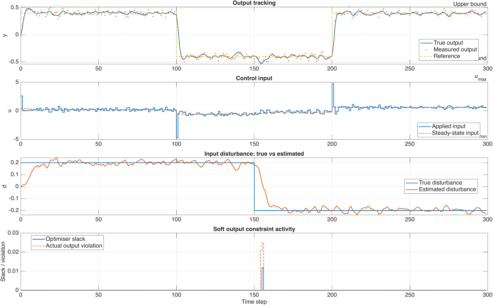
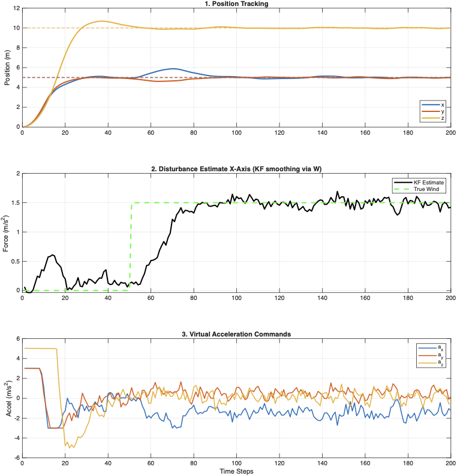

In the previous chapter, we derived Model Predictive Control under
idealised assumptions: full state measurement, a perfect model, and no
disturbances. Under these pure conditions, a simple regulator is
sufficient to drive the system to the origin.
However, real-world control engineering is defined by its
imperfections. Sensors are noisy and limited in number, meaning that the
full state is rarely measurable. Models are merely approximations,
failing to capture complex phenomena such as friction, aerodynamic drag
or slowly varying biases. Furthermore, disturbances are rarely
zero-mean; a drone is subject to a constant gravitational
force, and a building experiences continuous solar heat gains.
If we apply a standard MPC regulator to such a system, it will
generally fail to track the reference exactly. The mismatch between the
model’s prediction and the plant’s actual behaviour results in a
permanent steady-state error (or offset).
This chapter addresses these limitations. We introduce the
output-feedback framework, replacing the assumption of
full-state access with a Kalman filter that estimates the state
from noisy measurements. We then develop offset-free MPC : by augmenting the
system model with a disturbance state and employing a
target calculator, the MPC gains an integral-action-like
capability. Under the usual observability, feasibility and modelling
assumptions, this enables zero steady-state tracking error for constant
or slowly varying disturbances and references.
Connection to Classical Control In PID control,
steady-state error is eliminated by adding an integrator term
\(\frac{1}{s}\). In MPC, the same
effect is achieved by estimating a disturbance\(d\). In the language of the internal
model principle, augmenting the controller with a
constant-disturbance model is closely related to embedding integral
action.
The Disturbance Model
Standard LQR/MPC typically models plant uncertainty through zero-mean
stochastic terms such as process noise \(w_k\). However, many practically important
effects behave instead like persistent biases or slowly varying loads,
such as gravity acting on a drone or solar gains acting on a
building.
To handle this, we augment the system model with a disturbance
state\(d_k\), assumed constant or
slowly varying: \[\begin{align}
x_{k+1} &= A x_k + B u_k + B_w d_k + w_k \label{eq:aug_sys_x}\\
d_{k+1} &= d_k + \xi_k \label{eq:aug_sys_d}\\
y_k &= C x_k + C_d d_k + v_k \nonumber
\end{align}\] where:
\(d_k \in \mathbb{R}^{n_d}\) is
the integrating disturbance state.
\(B_w\) determines how the
disturbance enters the state equation. A common choice is the
input-disturbance model, in which \(B_w = B\), meaning that the disturbance
acts through the same channel as the control input.
\(C_d\) models disturbances that
affect the output directly, for example a measurement bias.
\(\xi_k\) is a
fictitious process-noise term. Physically, \(d_k\) may be constant, but we allow \(\xi_k\) in the estimator design so that the
Kalman filter remains responsive if the real disturbance changes slowly
over time.
State and Disturbance
Estimation
Since the disturbance \(d_k\) is not
ordinarily measurable, it must be estimated. The key idea is to treat
the unknown disturbance as an additional state variable.
We therefore define the augmented state vector\[z_k = \begin{bmatrix} x_k \\ d_k
\end{bmatrix},\] and construct the corresponding augmented
system: \[A_{\mathrm{aug}} =
\begin{bmatrix}
A & B_w \\
0 & I
\end{bmatrix}, \qquad
B_{\mathrm{aug}} =
\begin{bmatrix}
B \\
0
\end{bmatrix}, \qquad
C_{\mathrm{aug}} =
\begin{bmatrix}
C & C_d
\end{bmatrix}.\]
The identity matrix in the lower-right block of \(A_{\mathrm{aug}}\) expresses the modelling
assumption that the disturbance remains constant from one step to the
next unless the estimator sees evidence to the contrary.
A standard Kalman filter may now be designed for the augmented system
\((A_{\mathrm{aug}},
C_{\mathrm{aug}})\).
Observability Condition For the disturbance to be
estimable, the augmented pair \((A_{\mathrm{aug}}, C_{\mathrm{aug}})\) must
be observable, or at least detectable. Intuitively, the available
measurements must contain enough information to distinguish a change in
the physical state \(x_k\) from a
change in the disturbance \(d_k\).
A useful practical rule of thumb is not to introduce more independent
integrating-disturbance components than can be supported by the measured
outputs. Otherwise, the augmented model is likely to become
unobservable.
The Target Calculator
To achieve offset-free tracking, we cannot simply drive the input
towards zero. If a disturbance \(\hat
d_k\) is pushing the system, the actuators must generally
maintain a non-zero steady-state input \(u_{ss}\) in order to counteract it.
We therefore compute steady-state targets by solving the equilibrium
equations. At steady state we require:
The state to remain stationary, \[x_{ss} = A x_{ss} + B u_{ss} + B_w \hat
d_k,\]
The output to match the reference, \[r_k = C x_{ss} + C_d \hat d_k.\]
Method 1: Linear
Solution (Unconstrained)
In the simplest case, where the target is reachable and no
steady-state constraints are enforced, the equations above reduce to the
linear system \[\begin{equation}
\label{eq:target_calc}
\begin{bmatrix}
I - A & -B \\
C & 0
\end{bmatrix}
\begin{bmatrix}
x_{ss} \\
u_{ss}
\end{bmatrix}
=
\begin{bmatrix}
B_w \hat d_k \\
r_k - C_d \hat d_k
\end{bmatrix}.
\end{equation}\] If the coefficient matrix is nonsingular, this
yields a computationally cheap steady-state target. However, it ignores
actuator and state/output constraints, and therefore does not guarantee
that the resulting target is physically reachable.
Method 2: Constrained
Optimisation (Robust)
The Reachability Problem If the linear solution
produces, for example, \(u_{ss} >
u_{\max}\), then the target is infeasible. Feeding an unreachable
target to the MPC regulator can compromise recursive feasibility and may
lead to poor performance or failure.
To handle this, we reformulate the target calculation as a
constrained steady-state optimisation (SSO) problem. Instead of
insisting on exact equality \(y_{ss}=r_k\), we minimise the tracking
error whilst enforcing the equilibrium equations and any relevant
constraints.
At each time step, after estimating \(\hat
d_k\), we solve \[\begin{align}
\min_{x_{ss},u_{ss}} \quad &
\|C x_{ss} + C_d \hat d_k - r_k\|_Q^2 + \|u_{ss}\|_R^2
\label{eq:target_qp}\\
\text{subject to:} \quad &
(I-A)x_{ss} - B u_{ss} = B_w \hat d_k, \nonumber\\
&
u_{\min} \le u_{ss} \le u_{\max}, \nonumber\\
&
x_{\min} \le x_{ss} \le x_{\max}, \nonumber
\end{align}\] or, where more appropriate, output constraints may
be imposed in place of state constraints.
Advantages:
The MPC is always asked to track a target that exists within the
admissible set.
If the reference \(r_k\) is
unreachable, the SSO automatically returns the closest feasible
operating point.
The MPC Formulation
Offset-free control architecture. The target calculator uses
the disturbance estimate \(\hat d_k\)
to compute the steady-state targets \((x_{ss},u_{ss})\). The MPC regulator steers
the system towards these targets using the estimated state \(\hat x_k\). The augmented observer uses the
measurement \(y_k\) and the previously
applied control input \(u_{k-1}\). The
disturbance filter is optional and is included here to reduce noise in
the disturbance estimate.
Separation principle caveat The certainty-equivalence
approach — using the Kalman filter estimate \(\hat{x}_k\) as if it were the true state —
is exact for unconstrained LQG. For constrained MPC, this separation no
longer holds rigorously: the estimator and controller interact through
the constraints. In practice, the combined observer–MPC architecture
works well, but formal closed-loop guarantees require additional
analysis (e.g. inherent robustness of MPC or robust output-feedback MPC
formulations).
Detailed offset-free control architecture. The target
calculator may be implemented either as the simple linear equilibrium
solve of [eq:target_calc] or, more generally,
as a constrained steady-state optimisation. The regulator is shown with
soft output constraints, matching the examples developed later in the
chapter.
The complete control architecture is illustrated in Figure 1.1, with detailed
mathematical definitions shown in Figure 1.2.
Control Topology
The architecture operates as a hierarchical loop, separating the task
of setpoint determination from the task of regulation.
The information flow at time step \(k\)
is as follows:
Observer Block: The cycle begins with the
measurement \(y_k\). The augmented
observer fuses this measurement with the previously applied input
\(u_{k-1}\) to produce an estimate of
the physical state \(\hat x_k\) and the
raw disturbance estimate \(\hat
d_{\mathrm{raw},k}\). To prevent high-frequency sensor noise from
propagating into the controller, the disturbance estimate may be
smoothed by a disturbance filter, yielding \(\hat d_k\).
Target Calculator: This block acts as the bridge
between the external reference and the controller. It takes the
reference \(r_k\) and the estimated
disturbance \(\hat d_k\) as inputs. By
solving the equilibrium equations, or more generally a constrained
steady-state optimisation problem, it computes the target state \(x_{ss}\) and target input \(u_{ss}\). These represent an operating
point at which the output matches the reference whilst compensating for
the estimated disturbance.
MPC Regulator: Finally, the MPC regulator
receives the current state estimate \(\hat
x_k\) together with the calculated targets \((x_{ss},u_{ss})\). Its role is to steer the
system from \(\hat x_k\) towards \(x_{ss}\) whilst satisfying the imposed
constraints.
Optimisation Problem
Once the steady-state targets \((x_{ss},
u_{ss})\) have been computed, the regulation layer is designed in
deviation variables: \[\tilde x_i =
x_i - x_{ss}, \qquad \tilde u_i = u_i - u_{ss}.\] The full plant
prediction model at step \(i\) inside
the horizon follows from [eq:aug_sys_x] with noise terms set to
zero (certainty equivalence) and the disturbance replaced by its current
estimate \(\hat d_k\): \[x_{i+1} = A x_i + B u_i + B_w \hat d_k.\]
The steady-state pair \((x_{ss},
u_{ss})\) satisfies the equilibrium condition obtained by setting
\(x_{k+1} = x_k = x_{ss}\) and \(d_k = \hat d_k\) in [eq:aug_sys_x]–[eq:aug_sys_d]: \[x_{ss} = A x_{ss} + B u_{ss} + B_w \hat d_k,
\qquad
y_{ss} = C x_{ss} + C_d \hat d_k.\] Subtracting the equilibrium
equation from the prediction model gives \[\begin{align*}
x_{i+1} - x_{ss}
&= A(x_i - x_{ss}) + B(u_i - u_{ss})
+ \underbrace{B_w \hat d_k - B_w \hat d_k}_{=\;0}.
\end{align*}\] Because the steady-state pair absorbs the
disturbance estimate \(\hat d_k\)
through both the state equation and the output equation, all affine
terms cancel exactly, leaving the disturbance-free linear deviation
dynamics: \[\tilde x_{i+1} = A \tilde
x_i + B \tilde u_i.\]
Notation: Real Time vs Prediction Horizon MPC operates
on two distinct time scales:
\(k\) denotes the current
real-time sampling instant.
\(i\) denotes the prediction
step within the horizon.
Thus, \(\hat x_k\) is the current
estimated state, whereas \(\tilde x_i\)
is the predicted deviation \(i\) steps
ahead within the optimisation.
A standard offset-free tracking MPC problem is \[\begin{align}
\min_{\tilde u_0,\ldots,\tilde
u_{N-1},\,\epsilon_0,\ldots,\epsilon_{N-1}} \quad &
\sum_{i=0}^{N-1}
\left(
\|\tilde x_i\|_Q^2 + \|\tilde u_i\|_R^2 + \rho\|\epsilon_i\|^2
\right)
+ \|\tilde x_N\|_{P_{\mathrm{term}}}^2
\label{eq:mpc_problem}\\
\text{subject to:} \quad &
\tilde x_0 = \hat x_k - x_{ss}, \nonumber\\
&
\tilde x_{i+1} = A\tilde x_i + B\tilde u_i, \qquad i=0,\ldots,N-1,
\nonumber\\
&
u_{\min} \le \tilde u_i + u_{ss} \le u_{\max}, \nonumber\\
&
y_{\min,i} - \epsilon_i
\le
C(\tilde x_i + x_{ss})
\le
y_{\max,i} + \epsilon_i, \nonumber\\
&
\epsilon_i \ge 0, \qquad i=0,\ldots,N-1. \nonumber
\end{align}\] If \(C_d \neq 0\),
the corresponding term \(C_d \hat d_k\)
should also be included in the predicted output equation. In the
examples below, \(C_d=0\), so the
simpler form above is sufficient.
Topology Insight The initialisation constraint \[\tilde x_0 = \hat x_k - x_{ss}\] is the
key link between the observer and the target
calculator. The observer supplies \(\hat
x_k\), the target calculator supplies \(x_{ss}\), and the MPC regulator penalises
deviations from this target.
Because the cost function penalises \(\tilde x_i\) and \(\tilde u_i\) rather than the absolute input
\(u_i\), the controller is not
penalised for maintaining the non-zero steady-state input \(u_{ss}\) required to reject the
disturbance.
The control input applied to the plant is \[u_k = \tilde u_0^\star + u_{ss},\]
possibly followed by a final saturation step for numerical safety.
Handling
Infeasibility: Hard vs Soft Constraints
In an ideal world, the MPC solver always finds a trajectory
satisfying every constraint. In reality, disturbances, model mismatch or
estimation errors may push the system into a region from which it is
impossible to satisfy all limits simultaneously. If the feasible set
becomes empty, the optimisation problem fails.
To improve robustness, it is useful to distinguish between two types
of constraints.
Hard Constraints
(Inputs)
Input constraints represent immutable physical limits of the
actuators, such as the maximum voltage of a motor or the fully open
position of a valve. Since the controller cannot command an actuator
beyond its physical capability, input constraints should normally be
modelled as hard constraints.
Soft
Constraints (States/Outputs)
State or output constraints often represent safety or performance
requirements. If a large disturbance makes one of these temporarily
impossible to satisfy, a hard constraint would render the optimisation
infeasible exactly when corrective action is most needed. To avoid this,
such constraints are often softened by introducing a slack variable.
Mathematical
Implementation
We introduce a non-negative slack variable\(\epsilon_i \ge 0\), which acts as a safety
valve for the soft constraints. Ideally, \(\epsilon_i=0\). To encourage this, we add a
large penalty weight \(\rho\) to the
cost function. The modified problem is \[\begin{align*}
\min_{\tilde u,\epsilon} \quad &
\sum_{i=0}^{N-1}
\left(
\|\tilde x_i\|_Q^2 + \|\tilde u_i\|_R^2 + \rho\|\epsilon_i\|^2
\right)
+ \|\tilde x_N\|_{P_{\mathrm{term}}}^2 \\
\text{subject to:} \quad &
\tilde x_{i+1} = A\tilde x_i + B\tilde u_i, \\
&
u_{\min} \le \tilde u_i + u_{ss} \le u_{\max}, \\
&
y_{\min,i} - \epsilon_i
\le
C(\tilde x_i + x_{ss})
\le
y_{\max,i} + \epsilon_i, \\
&
\epsilon_i \ge 0.
\end{align*}\]
Interpretation Because \(\rho\) is chosen to be very large, the
optimiser keeps \(\epsilon_i = 0\)
whenever possible, so that the soft constraint behaves like a hard one.
If, however, the strict bound is temporarily impossible to satisfy, the
optimiser increases \(\epsilon_i\) only
as much as necessary to maintain feasibility.
MATLAB: Offset-Free MPC with Disturbance Estimation
Problem Formulation:
We consider a second-order discrete-time linear system subject to
measurement noise and an unknown piecewise-constant input disturbance.
The objective is to track a piecewise-constant reference \(r_k\) whilst respecting hard input
constraints and soft output constraints.
System Dynamics: \[\begin{align*}
x_{k+1} &= A x_k + B u_k + B_w d_k \\
y_k &= C x_k + v_k
\end{align*}\] where the system matrices are \[A = \begin{bmatrix} 0.9535 & 0.0761 \\
-0.8454 & 0.5478 \end{bmatrix}, \quad
B = \begin{bmatrix} 0.0465 \\ 0.8454 \end{bmatrix}, \quad
B_w = B, \quad
C = \begin{bmatrix} 1 & 0 \end{bmatrix}.\]
Constraints:
Hard input saturation: \(-5 \le u_k \le
5\),
Soft output bounds: \(-0.5 \le y_k \le
0.5\).
Solution Strategy:
A standard MPC controller based on the nominal model would exhibit a
steady-state offset in the presence of the unknown disturbance. The
offset-free implementation therefore uses three components:
Augmented Kalman Filter: The state is augmented
with a constant disturbance model, \[z_k =
\begin{bmatrix}
x_k\\
d_k
\end{bmatrix}, \qquad
z_{k+1} =
\begin{bmatrix}
A & B_w\\
0 & 1
\end{bmatrix} z_k +
\begin{bmatrix}
B\\
0
\end{bmatrix} u_k,\] and a Kalman filter provides
estimates \(\hat x_k\) and \(\hat d_k\).
Target Calculator: The estimated disturbance is
used to compute the steady-state operating point \((x_{ss},u_{ss})\) satisfying \[(I-A)x_{ss} - B u_{ss} = B_w \hat d_k,
\qquad
Cx_{ss} = r_k.\]
Deviation-Form MPC: The regulator then solves an
MPC problem in deviation coordinates \(\tilde
x_i = x_i - x_{ss}\), \(\tilde u_i =
u_i - u_{ss}\), with soft output constraints and hard input
constraints.
Figure 1.3 shows the closed-loop
output, the control signals, the disturbance estimate and the activity
of the soft output constraint.

Closed-loop performance of the offset-free MPC with soft
output constraints under piecewise-constant reference changes and an
unknown step disturbance. The top panel shows accurate output tracking
of the constrained reference whilst keeping the output close to the
prescribed bounds. The second panel shows the applied control input
together with the steady-state target input, with brief transient peaks
at the reference-switching instants. The third panel shows that the
augmented observer estimates the constant input disturbance well,
including the disturbance sign change. The bottom panel shows that the
soft output constraint is active only briefly during the disturbance
transition, indicating that constraint violations are small and
short-lived.
Input: System matrices \((A,B,B_w,C)\), optional output-bias matrix
\(C_d\), weights \((Q,R,P_{\mathrm{term}},\rho)\),
input/output constraints, prediction horizon \(N\). Output: Control input
\(u_k\).
Construct the augmented model \[z_k=
\begin{bmatrix}
x_k\\
d_k
\end{bmatrix},\qquad
z_{k+1}=A_{\mathrm{aug}}z_k+B_{\mathrm{aug}}u_k,\qquad
y_k=C_{\mathrm{aug}}z_k .\] Compute the estimator gain
\(L\) from the DARE associated with
\((A_{\mathrm{aug}},C_{\mathrm{aug}},W,V)\).
Compute the terminal cost matrix \(P_{\mathrm{term}}\) for the deviation
dynamics. Define the parametric MPC problem: \[\begin{align*}
\min_{\tilde u,\epsilon}\quad
&\sum_{i=0}^{N-1}
\left(
\|\tilde x_i\|_Q^2+\|\tilde u_i\|_R^2+\rho\|\epsilon_i\|^2
\right)
+\|\tilde x_N\|_{P_{\mathrm{term}}}^2 \\
\text{s.t.}\quad
&\tilde x_0=\hat x_k-x_{ss},\\
&\tilde x_{i+1}=A\tilde x_i+B\tilde u_i,\qquad
i=0,\dots,N-1,\\
&u_{\min}\le \tilde u_i+u_{ss}\le u_{\max},\\
&y_{\min,i}-\epsilon_i\le C(\tilde x_i+x_{ss})\le
y_{\max,i}+\epsilon_i,\\
&\epsilon_i\ge 0,\qquad i=0,\dots,N-1.
\end{align*}\] Compile the solver object, including any real-time
parameters required by the chosen formulation.
Initialise \(\hat z_{0|0}\), \(u_{-1}\), and optionally \(\hat d_{0}\). Measure the output \(y_k\).
// 1. Augmented-state estimation\(\hat z_{k|k-1}\gets A_{\mathrm{aug}}\hat
z_{k-1|k-1}+B_{\mathrm{aug}}u_{k-1}\)\(\hat z_{k|k}\gets \hat
z_{k|k-1}+L\bigl(y_k-C_{\mathrm{aug}}\hat z_{k|k-1}\bigr)\)
Extract \(\hat x_k\) and the raw
disturbance estimate \(\hat d_{,k}\)
from \(\hat z_{k|k}\).
// 2. Steady-state target calculation Compute \((x_{ss},u_{ss})\) from the current
reference and disturbance estimate, either \[x_{ss}=Ax_{ss}+Bu_{ss}+B_w\hat d_k,\qquad
r_k=Cx_{ss}+C_d\hat d_k,\] or, more generally, by solving
a constrained steady-state optimisation problem.
// 3. MPC regulation Solve the MPC problem using the current
parameters \((\hat x_k,x_{ss},u_{ss})\)
and any future bound sequences if required. Obtain the first optimal
move \(\tilde u_0^\star\).
// 4. Apply input\(u_k \gets
\tilde u_0^\star + u_{ss}\)\(u_k \gets
\max(u_{\min},\min(u_{\max},u_k))\) Apply \(u_k\) to the plant.
Note. Algorithm [alg:offset_free_mpc] describes
the general offset-free MPC structure based on augmented-state
disturbance estimation, steady-state target calculation and
deviation-form regulation. In the simplest reference-tracking case, the
steady-state pair \((x_{ss},u_{ss})\)
may be obtained directly from the linear equilibrium equations [eq:target_calc]. In constrained or
economic MPC, however, it is generally more appropriate to compute \((x_{ss},u_{ss})\) by solving a constrained
steady-state optimisation problem. Moreover, if soft output constraints
are used, the slack variables must satisfy \(\epsilon_i \ge 0\), and the indexing of
predicted outputs in the constraints should be chosen consistently with
the state-update convention adopted in the MPC formulation.
MATLAB: Offset-Free MPC for Quadrotor Position
Control
1. Problem Formulation: Nonlinear Dynamics
We consider the translational dynamics of a quadrotor. Let \(p = [x, y, z]^T\) denote the position and
\(v = [\dot{x}, \dot{y}, \dot{z}]^T\)
the velocity. The control inputs are the roll angle \(\phi\), pitch angle \(\theta\), and total thrust \(T\). Assuming zero yaw \(\psi=0\), the translational equations of
motion are \[\begin{align}
\ddot{x} &= \frac{T}{m}\cos\phi \sin\theta + w_x \nonumber\\
\ddot{y} &= -\frac{T}{m}\sin\phi + w_y \nonumber\\
\ddot{z} &= \frac{T}{m}\cos\phi \cos\theta - g + w_z
\label{eq:nonlinear_quad}
\end{align}\] where \(m\) is the
mass, \(g\) is gravity, and \(w=[w_x,w_y,w_z]^T\) represents external
wind disturbances. These dynamics are nonlinear and coupled. Tilting to
generate lateral motion, for example, reduces the vertical lift
component and therefore changes the thrust required to maintain
altitude.
2. Linearisation and Virtual Inputs
To design a linear MPC, we linearise the dynamics about the hover
equilibrium. In hover, the attitude angles are small and the thrust
balances gravity. Using the small-angle approximations \(\sin\theta \approx \theta\), \(\sin\phi \approx \phi\), \(\cos\phi \approx \cos\theta \approx 1\), [eq:nonlinear_quad] becomes \[\ddot{x} \approx g\theta, \qquad
\ddot{y} \approx -g\phi, \qquad
\ddot{z} \approx \frac{T}{m} - g.\]
We now define the virtual control inputs\[u_{\mathrm{lin}} = [a_x,\ a_y,\ a_z]^T,\]
which represent commanded translational accelerations. The corresponding
mapping to physical inputs is \[\begin{equation}
\label{eq:virtual_mapping}
\begin{aligned}
a_x &\triangleq g\theta & \Rightarrow
\theta_{\mathrm{cmd}} &= \frac{a_x}{g},\\
a_y &\triangleq -g\phi & \Rightarrow
\phi_{\mathrm{cmd}} &= -\frac{a_y}{g},\\
a_z &\triangleq \frac{T}{m} - g & \Rightarrow
T_{\mathrm{cmd}} &= m(a_z + g).
\end{aligned}
\end{equation}\]
Substituting these virtual inputs into the linearised model decouples
the motion into three double integrators, so that the discrete-time
predictor used by the MPC has the form \[x_{k+1} = A x_k + B
u_{\mathrm{lin},k}.\]
3. Offset-Free Control Strategy
The control loop proceeds in three stages:
Estimation: An augmented Kalman filter estimates
the state and a constant disturbance vector representing wind
acceleration. The raw disturbance estimate is then low-pass filtered to
reduce noise.
Target Calculation: Given the filtered
disturbance estimate \(\hat d_k\), the
steady-state pair \((x_{ss},u_{ss})\)
is computed from the equilibrium equations \[\begin{bmatrix}
I-A & -B\\
C & 0
\end{bmatrix}
\begin{bmatrix}
x_{ss}\\
u_{ss}
\end{bmatrix}
=
\begin{bmatrix}
B_w \hat d_k\\
r_{\mathrm{ref}}
\end{bmatrix}.\] Here \(u_{ss}\) is the steady virtual acceleration
required to counteract the estimated wind.
Regulation: The MPC operates in deviation
coordinates and computes the optimal corrective input sequence that
steers the current state estimate towards the target.
Finally, the virtual control input is mapped back to the physical
commands \((\phi,\theta,T)\) using [eq:virtual_mapping].
4. MATLAB Implementation
The code below simulates this strategy. The controller uses a linear
prediction model, but the plant is simulated with the full nonlinear
dynamics using RK4 integration. A step wind disturbance is applied at
\(t=50\) s. Figure [fig:quad_mpc_result] shows the
simulation result for tracking and disturbance observation.

clear; clc; close all;
%% 1. System & Linear Model
g = 9.81; m = 1.0; dt = 0.1;
Ac = [zeros(3,3) eye(3); zeros(3,3) zeros(3,3)];
Bc = [zeros(3,3); eye(3)];
Cc = [eye(3), zeros(3,3)];
sys_d = c2d(ss(Ac, Bc, Cc, 0), dt, 'zoh');
A = sys_d.A; B = sys_d.B; C = sys_d.C;
nx = 6; nu = 3; ny = 3;
%% 2. Augmented Observer
Bw = B;
A_aug = [A, Bw; zeros(3,nx), eye(3)];
B_aug = [B; zeros(3,nu)];
C_aug = [C, zeros(3,3)];
% --- KEY TUNING ---
% W(1:6,1:6) : process noise on physical states (keep small)
% W(7:9,7:9) : process noise on disturbance states
% LOWER -> Kalman gain for d is small -> slow update -> implicit LPF
% HIGHER -> fast disturbance tracking -> noisier estimate
W = diag([1e-3*ones(1,6), 5e-3*ones(1,3)]);
V = 1e-2 * eye(3);
[P_obs,~,~] = dare(A_aug', C_aug', W, V);
L = P_obs * C_aug' / (C_aug * P_obs * C_aug' + V);
%% 3. Target Calculator
M_target = [eye(nx)-A, -B; C, zeros(ny,nu)];
P_target = pinv(M_target);
%% 4. MPC Formulation (Deviation Form)
N = 50;
Q = diag([20 20 40, 1 1 1]);
R = diag([2 2 2]);
rho = 1e4;
[P_term,~,~] = dare(A, B, Q, R);
du = sdpvar(nu, N, 'full');
dx = sdpvar(nx, N+1, 'full');
slack = sdpvar(nu, N, 'full');
x_hat = sdpvar(nx, 1);
x_ss = sdpvar(nx, 1);
u_ss = sdpvar(nu, 1);
obj = 0;
cons = [dx(:,1) == x_hat - x_ss];
for k = 1:N
cons = [cons, dx(:,k+1) == A*dx(:,k) + B*du(:,k)];
obj = obj + dx(:,k)'*Q*dx(:,k) + du(:,k)'*R*du(:,k) + rho*norm(slack(:,k),2)^2;
u_abs = du(:,k) + u_ss;
cons = [cons, -3 - slack(1:2,k) <= u_abs(1:2) <= 3 + slack(1:2,k)];
cons = [cons, -5 - slack(3,k) <= u_abs(3) <= 5 + slack(3,k)];
cons = [cons, slack(:,k) >= 0];
end
obj = obj + dx(:,N+1)'*P_term*dx(:,N+1);
ops = sdpsettings('solver','quadprog','verbose',0);
controller = optimizer(cons, obj, ops, {x_hat, x_ss, u_ss}, du(:,1));
%% 5. Simulation Loop
T_sim = 200;
x_true = zeros(6,1);
u_applied = zeros(3,1);
z_est = zeros(9,1);
wind_force = [0;0;0];
ref = [5; 5; 10];
log_x = zeros(3, T_sim);
log_u = zeros(3, T_sim);
log_d = zeros(3, T_sim);
log_d_true = zeros(3, T_sim);
for t = 1:T_sim
if t > 50,
wind_force = [1.5; -0.5; 0];
end
% A. Measure & Estimate
y_meas = C*x_true + sqrt(0.01)*randn(3,1);
z_pred = A_aug*z_est + B_aug*u_applied;
y_pred = C_aug*z_pred;
z_est = z_pred + L*(y_meas - y_pred);
x_hat_val = z_est(1:6);
d_hat = z_est(7:9);
% B. Calculate Targets
rhs = [Bw * d_hat; ref];
ss_sol = P_target * rhs;
x_target = ss_sol(1:nx);
u_target = ss_sol(nx+1:end);
% C. MPC Solve
[du_opt, err] = controller{x_hat_val, x_target, u_target};
if err,
du_opt = zeros(3,1);
end
u_mpc = du_opt + u_target;
% D. Nonlinear Mapping & Saturation
accel_z_total = u_mpc(3) + g;
Thrust = m * accel_z_total;
theta_cmd = max(-0.5, min(0.5, u_mpc(1) / g));
phi_cmd = max(-0.5, min(0.5, -u_mpc(2) / g));
Thrust = max(0, min(20, Thrust));
u_phys = [phi_cmd; theta_cmd; Thrust];
% E. Plant Update (Nonlinear)
x_true = rk4_step(@quadrotor_dyn, x_true, u_phys, wind_force, dt, m, g);
u_applied = u_mpc;
log_x(:,t) = x_true(1:3);
log_u(:,t) = u_mpc;
log_d(:,t) = d_hat;
log_d_true(:,t) = wind_force;
end
%% Plotting
t_vec = 1:T_sim;
figure('Color','w','Position',[100 100 800 800]);
subplot(3,1,1);
h = plot(t_vec, log_x, 'LineWidth', 2); hold on;
clr = get(gca,'ColorOrder');
yline(ref(1),'--','Color',clr(1,:),'LineWidth',1.5);
yline(ref(2),'--','Color',clr(2,:),'LineWidth',1.5);
yline(ref(3),'--','Color',clr(3,:),'LineWidth',1.5);
grid on; ylabel('Position (m)');
title('1. Position Tracking');
legend(h,{'x','y','z'},'Location','SouthEast');
subplot(3,1,2);
plot(t_vec, log_d(1,:), 'k', 'LineWidth', 2); hold on;
plot(t_vec, log_d_true(1,:), 'g--','LineWidth', 2);
grid on; ylabel('Force (m/s^2)');
title('2. Disturbance Estimate X-Axis (KF smoothing via W)');
legend('KF Estimate','True Wind');
subplot(3,1,3);
plot(t_vec, log_u, 'LineWidth', 1.5);
legend('a_x','a_y','a_z');
grid on; title('3. Virtual Acceleration Commands');
ylabel('Accel (m/s^2)'); xlabel('Time Steps');
%% Helper Functions
function x_next = rk4_step(fun, x, u, w, dt, m, g)
k1 = fun(x, u, w, m, g);
k2 = fun(x+0.5*dt*k1, u, w, m, g);
k3 = fun(x+0.5*dt*k2, u, w, m, g);
k4 = fun(x+dt*k3, u, w, m, g);
x_next = x + (dt/6)*(k1 + 2*k2 + 2*k3 + k4);
end
function dxdt = quadrotor_dyn(x, u, w, m, g)
phi = u(1); theta = u(2); T = u(3);
Fx = T*(cos(phi)*sin(theta));
Fy = T*(-sin(phi));
Fz = T*(cos(phi)*cos(theta));
ax = (Fx + w(1))/m;
ay = (Fy + w(2))/m;
az = (Fz + w(3))/m - g;
dxdt = [x(4:6); ax; ay; az];
end
Single-zone building heating with economic offset-free
MPC We consider a heated office room (\(\sim\)50 m\(^2\)) whose thermal dynamics are described
by a three-state physically derived RC model discretised at \(T_s = 1800\,\text{s}\) (30 min) via the
matrix exponential. The states are \[x_k =
\begin{bmatrix} T_{\mathrm{air},k} \\ T_{w,\mathrm{in},k} \\
T_{w,\mathrm{out},k} \end{bmatrix}\!,\] representing indoor air
temperature, inner wall layer temperature, and outer wall layer
temperature (all in \(^\circ\)C). The
discrete-time model is \[x_{k+1} = A x_k + B
u_k + E\,T_{\mathrm{amb},k}
+ B_{\mathrm{sol}}\,\varphi_{\mathrm{sol},k}
+ B_w\,d_k,
\qquad
y_k = C x_k,\] where \(u_k \in [0,
2000]\) W is the heater power, \(T_{\mathrm{amb},k}\) (\(^\circ\)C) is the measured outdoor
temperature, \(\varphi_{\mathrm{sol},k}\) (W/m\(^2\)) is the measured solar
irradiance (both treated as known feedforwards), and \(d_k\) (\(^\circ\)C/step) is an unmeasured
scaled disturbance representing occupancy and internal heat gains. The
output \(y_k = 0.56\,T_{\mathrm{air},k} +
0.44\,T_{w,\mathrm{in},k}\) is the operative temperature
(ISO 7726), measured with noise standard deviation \(\sigma_v = 0.1\,^\circ\)C.
Outdoor temperature\((T_{\mathrm{amb},k})\): \[T_{\mathrm{amb},k} = 5 +
6\sin\!\left(\tfrac{2\pi(t_k-14)}{24}\right) + 0.5\,\eta_k,\]
ranging nominally between \(-1\,^\circ\)C and \(11\,^\circ\)C; treated as a known
feedforward.
Solar irradiance\((\varphi_{\mathrm{sol},k})\): \[\varphi_{\mathrm{sol},k} = \max\!\left(0,\;
600\sin\!\left(\tfrac{\pi(\mathrm{mod}(t_k,24)-8)}{9}\right)\right),\]
treated as a known feedforward.
Occupancy disturbance\((d_k)\): an effective scaled thermal
disturbance, \[d_k = \begin{cases}
0.191\,^\circ\text{C/step} & 08{:}00 \le \mathrm{time}(t_k) <
18{:}00, \\ 0 & \text{otherwise,} \end{cases}\] corresponding
to 300 W of internal gains; unknown to the controller and
estimated by the Kalman filter.
Augmented Kalman observer. The disturbance is
appended to the state as a random walk, \(z_k
= [x_k^\top,\, d_k]^\top\), giving the augmented model \[z_{k+1} =
\begin{bmatrix} A & B_w \\ 0 & 1 \end{bmatrix} z_k
+ \begin{bmatrix} B \\ 0 \end{bmatrix} u_k
+ \begin{bmatrix} E \\ 0 \end{bmatrix} T_{\mathrm{amb},k}
+ \begin{bmatrix} B_{\mathrm{sol}} \\ 0 \end{bmatrix}
\varphi_{\mathrm{sol},k},\]\[y_k =
[C,\;0]\,z_k + v_k.\] The process noise covariance is selected as
\(W =
\mathrm{diag}(10^{-3},10^{-3},10^{-3},\,(0.01)^2)\) is directly
interpretable: \(\sqrt{W_d}=0.01\,^\circ\)C/step represents
the expected occupancy change between sampling instants. The
steady-state Kalman gain \(L\) is
obtained from the DARE with measurement noise variance \(V=0.01\).
Economic steady-state target calculator. At each
step, the following QP selects an economically optimal steady-state pair
\((x_{ss}, u_{ss})\): \[\begin{align*}
\min_{x_{ss},u_{ss},\epsilon_{ss}} \quad
& p_k\,u_{ss} + 10^4\,\epsilon_{ss}^2 \\
\text{s.t.} \quad
& x_{ss} = A x_{ss} + B u_{ss}
+ E T_{\mathrm{amb},k}
+ B_{\mathrm{sol}}\varphi_{\mathrm{sol},k}
+ B_w \hat d_k, \\
& y_{\min,k}-\epsilon_{ss} \le C x_{ss} \le
y_{\max,k}+\epsilon_{ss},
\quad 0 \le u_{ss} \le 2000,\quad \epsilon_{ss}\ge 0.
\end{align*}\]
Economic MPC regulator with price preview.
Defining \(\tilde x_i = x_i - x_{ss}\),
\(\tilde u_i = u_i - u_{ss}\), the
regulator solves over a horizon \(N=24\) (12 hours): \[\begin{align*}
\min_{\tilde u,\epsilon} \quad &
\sum_{i=0}^{N-1}\!\Bigl(
\|\tilde x_{i+1}\|_Q^2
+\beta\,p_{k+i}\,(\tilde u_i+u_{ss})\tfrac{T_s}{3600}
+\rho\,\epsilon_i^2
\Bigr) + \|\tilde x_N\|_P^2 \\
\text{s.t.} \quad
& \tilde x_0 = \hat x_k - x_{ss}, \\
& \tilde x_{i+1} = A\tilde x_i + B\tilde u_i, \\
& 0 \le \tilde u_i + u_{ss} \le 2000, \\
& y_{\min,k+i}-\epsilon_i \le C(\tilde x_{i+1}+x_{ss}) \le
y_{\max,k+i}+\epsilon_i,
\quad \epsilon_i\ge 0,
\end{align*}\] with \(Q=\mathrm{diag}(5,2,1)\), \(\beta=6\), \(\rho=10^7\), and \(P\) from the DARE. The term \(\beta p_{k+i}(\tilde
u_i+u_{ss})(T_s/3600)\) is the actual energy expenditure in
pounds at future step \(k+i\). The
penalty hierarchy \(\rho \gg
\beta\,p_{\max}\,u_{\max}\,(T_s/3600)\), i.e. \(10^7 \gg 1680\), ensures comfort violations
are never preferred over heating.
MATLAB implementation: The plotting section is
omitted below.
Offset-free MPC of a 3-DOF Articulated Robot
Manipulator
Problem
Description
Consider a three-degree-of-freedom (3-DOF) RRR articulated
robot manipulator operating in three-dimensional space. The three
revolute joints are arranged as follows: joint 1 rotates about the
vertical (\(z\)) axis (base yaw),
whilst joints 2 and 3 rotate about parallel horizontal (\(y\)) axes (shoulder and elbow pitch,
respectively). This configuration is representative of the positioning
structure found in industrial serial manipulators.
The control objective is to track piecewise-constant joint-angle
references \(r(t) \in \mathbb{R}^{3}\)
in the presence of persistent disturbances (joint friction and
unexpected payload changes) whilst respecting hard torque limits and
soft joint-angle limits. An offset-free MPC strategy based on
computed-torque feedback linearisation and an augmented Kalman filter
(AKF) is employed.
Kinematic
Configuration
Figure 1.4 shows the side-view projection of
the arm and the definition of the joint angles \(q_1\), \(q_2\), and \(q_3\). The base yaw axis is perpendicular
to the plane of the figure.
Side-view projection of the 3-DOF RRR articulated arm.
Joint 1 (base yaw) is perpendicular to the page; joints 2 and 3
(shoulder and elbow pitch) lie in the plane shown.
Physical
Parameters
Symbol
Description
Value
Unit
\(I_{z1}\)
Base yaw inertia (joint 1)
1.50
kg m\(^{2}\)
\(m_2\)
Mass of upper arm (link 2)
6.00
kg
\(a_2\)
Length of upper arm
0.45
m
\(l_{c2}\)
COM distance from joint 2
0.22
m
\(I_2\)
Pitch inertia of link 2 about COM
0.15
kg m\(^{2}\)
\(m_3\)
Mass of forearm (link 3)
3.50
kg
\(a_3\)
Length of forearm
0.35
m
\(l_{c3}\)
COM distance from joint 3
0.17
m
\(I_3\)
Pitch inertia of link 3 about COM
0.08
kg m\(^{2}\)
\(T_s\)
Sampling period
0.02
s
Control Technique: Computed-Torque
MPC with Disturbance Observer
The full nonlinear robot dynamics are: \[\begin{equation}
M(q)\,\ddot{q} + Cor(q,\dot{q})\,\dot{q} + G(q) = \tau +
d_{\tau},
\label{eq:robot_dyn}
\end{equation}\] where \(q \in
\mathbb{R}^{3}\) are the joint angles, \(M(q)\) is the symmetric positive-definite
inertia matrix, \(Cor(q,\dot{q})\dot{q}\) collects Coriolis
and centrifugal torques, \(G(q)\) is
the gravity vector, \(\tau\) is the
applied torque, and \(d_{\tau} \in
\mathbb{R}^{3}\) represents lumped torque-space disturbances
(friction, payload) in [Nm].
Computed-torque (CT) feedback linearisation is applied by
choosing: \[\begin{equation*}
\tau = M(q)\,v + Cor(q,\dot{q})\,\dot{q} + G(q),
\end{equation*}\] which reduces [eq:robot_dyn] to three decoupled
double integrators, one per joint: \[\begin{equation*}
\ddot{q} = v + \underbrace{M(q)^{-1}\,d_{\tau}}_{\displaystyle
d},
\end{equation*}\] where \(d \triangleq
M(q)^{-1}\,d_{\tau} \in \mathbb{R}^{3}\) is the
acceleration-space disturbance [rad/s\(^{2}\)]. Because the MPC and observer
operate entirely in the linearised (virtual-acceleration) domain, \(d\) is the natural disturbance variable for
the remainder of the formulation. If the physical torque-space
disturbance is needed, it can be recovered as \(\hat{d}_{\tau} = M(q)\,\hat{d}\).
Defining the state \(x =
[q^{\top},\,\dot{q}^{\top}]^{\top} \in \mathbb{R}^{6}\), the
linearised continuous-time plant is: \[\begin{equation*}
\dot{x} =
\underbrace{\begin{bmatrix}0 & I \\ 0 &
0\end{bmatrix}}_{A_c}x +
\underbrace{\begin{bmatrix}0 \\ I\end{bmatrix}}_{B_c}v, \qquad
y = \underbrace{\begin{bmatrix}I & 0\end{bmatrix}}_{C}\,x,
\end{equation*}\] which is discretised exactly via zero-order
hold at \(T_s = 0.02\) s to give \((A,\,B,\,C)\). The entire control scheme is
shown in Figure [fig:CTMPC_robot_block_diagram].
MPC Formulation
Augmented observer for offset-free control. A random-walk
model \(d_{k+1} = d_k\) for the
acceleration-space disturbance is appended to the plant state, yielding
the augmented system \(z =
[x^{\top},\,d^{\top}]^{\top} \in \mathbb{R}^{9}\): \[\begin{equation*}
\begin{bmatrix}x_{k+1}\\d_{k+1}\end{bmatrix}
=
\underbrace{\begin{bmatrix}A & B \\ 0 &
I\end{bmatrix}}_{A_{\mathrm{aug}}}
\begin{bmatrix}x_k\\d_k\end{bmatrix}
+
\underbrace{\begin{bmatrix}B\\0\end{bmatrix}}_{B_{\mathrm{aug}}}v_k,
\qquad
y_k =
\underbrace{\begin{bmatrix}C &
0\end{bmatrix}}_{C_{\mathrm{aug}}}
\begin{bmatrix}x_k\\d_k\end{bmatrix}.
\end{equation*}\] Note that \(d\) enters the state equation through \(B\) (the same input matrix as \(v\)), confirming that it represents the
disturbance in virtual-acceleration units [rad/s\(^{2}\)], not in torque units [Nm]. The
observer gain \(L\) is obtained from
the discrete algebraic Riccati equation (DARE) with process noise
covariance \(Q =
\mathrm{diag}(10^{-6}I_6,\;10^{-3}I_3)\) and measurement noise
covariance \(R =
\sigma_{\mathrm{enc}}^{2}\,I_3\) where \(\sigma_{\mathrm{enc}} = 0.05^{\circ}\)
(encoder standard deviation). The controller can only access the
measurements of angular positions, \(q\). Therefore, \(C=\begin{bmatrix}
I_{3\times 3} & 0_{3\times 3}
\end{bmatrix}\)
Target calculator. At steady state, \(x_{k+1} = x_k = x_{\mathrm{ss}}\) and \(y_{\mathrm{ss}} = r_k\), so the pair \((x_{\mathrm{ss}},\,v_{\mathrm{ss}})\)
satisfies: \[\begin{equation*}
\begin{bmatrix}I - A & -B \\ C & 0\end{bmatrix}
\begin{bmatrix}x_{\mathrm{ss}} \\ v_{\mathrm{ss}}\end{bmatrix}
=
\begin{bmatrix}B\,\hat{d}_k \\ r_k\end{bmatrix}.
\end{equation*}\] This ensures that the MPC drives the plant to
the reference with zero steady-state offset despite the persistent
acceleration-space disturbance estimate \(\hat{d}_k\) [rad/s\(^{2}\)].
Deviation-form optimal control problem. Let \(\delta x_k = x_k - x_{\mathrm{ss}}\) and
\(\delta v_k = v_k - v_{\mathrm{ss}}\).
The QP solved at each sampling instant is: \[\begin{equation*}
\begin{aligned}
\min_{\{\delta v_k\},\{s_k\}}\;\;
&\sum_{k=0}^{N-1}\!\left[
\delta y_k^{\top} Q_y\,\delta y_k
+ \delta v_k^{\top} R\,\delta v_k
+ \rho\,s_k^{\top}s_k
\right]
+ \delta x_N^{\top} P_N\,\delta x_N \\[4pt]
\text{subject to}\;\;
&\delta x_{k+1} = A\,\delta x_k + B\,\delta v_k,
\quad \delta x_0 = \hat{x}_k - x_{\mathrm{ss}},\\
&v_{\min} \leq \delta v_k + v_{\mathrm{ss}} \leq
v_{\max},\\
&y_{\min} - s_k \leq C(\delta x_k + x_{\mathrm{ss}})
\leq y_{\max} + s_k,\\
&s_k \geq 0, \quad k = 0, \ldots, N-1,
\end{aligned}
\end{equation*}\] where \(\delta y_k =
C\,\delta x_k\), \(P_N\) is the
terminal LQR cost matrix (from the DARE for \((A,B,Q_{\mathrm{mpc}},R)\)), and \(s_k \in \mathbb{R}^{3}\) are slack
variables that soften the joint-angle constraints.
Output feedback MPC replaces full-state measurements with
observer-based state estimates in the MPC optimisation loop.
The separation principle, which guarantees independent design of
estimator and controller in LQG, does not extend directly to constrained
MPC and requires careful treatment.
A disturbance model augments the plant state with an integrating
disturbance, enabling the estimator to detect and compensate for
persistent model–plant mismatch.
Offset-free MPC uses the augmented observer’s disturbance
estimate in a steady-state target calculator to eliminate steady-state
tracking errors.
The steady-state target calculator solves a small optimisation
problem at each step to find the closest feasible equilibrium consistent
with the estimated disturbance.
The observer-based MPC architecture combines an augmented Kalman
filter, a steady-state target calculator, and a dynamic MPC optimiser
into a modular feedback loop.
Practical examples, including quadrotor altitude control,
building HVAC regulation, and robot arm trajectory tracking, illustrate
the design methodology on systems with different constraint
structures.
Exercises
Augmented State-Space Construction. Consider a
scalar plant \[x_{k+1} = 0.8\,x_k + u_k +
d_k, \qquad y_k = x_k,\] where \(d_k\) is an unknown constant disturbance
(\(d_{k+1}=d_k\)).
Define the augmented state vector \(z_k
= [x_k,\; d_k]^T\) and write down the augmented system matrices
\(A_{\mathrm{aug}}\), \(B_{\mathrm{aug}}\), and \(C_{\mathrm{aug}}\).
Now suppose the disturbance enters only through the output,
i.e. \(B_w = 0\) and \(C_d = 1\). How do the augmented matrices
change?
For the two-state system \[A =
\begin{bmatrix} 1 & 0.1 \\ 0 & 0.95 \end{bmatrix}, \quad
B = \begin{bmatrix} 0.005 \\ 0.1 \end{bmatrix}, \quad
B_w = B, \quad
C = \begin{bmatrix} 1 & 0 \end{bmatrix}, \quad C_d =
0,\] write out the full augmented matrices \(A_{\mathrm{aug}} \in \mathbb{R}^{3\times
3}\), \(B_{\mathrm{aug}} \in
\mathbb{R}^{3\times 1}\), and \(C_{\mathrm{aug}} \in \mathbb{R}^{1\times
3}\).
Detectability of the Augmented System. For the
augmented pair \((A_{\mathrm{aug}},\,
C_{\mathrm{aug}})\) constructed in Exercise 1(c):
Form the observability matrix \[\mathcal{O} = \begin{bmatrix} C_{\mathrm{aug}} \\
C_{\mathrm{aug}} A_{\mathrm{aug}} \\ C_{\mathrm{aug}} A_{\mathrm{aug}}^2
\end{bmatrix}\] and verify that its rank equals the dimension of
the augmented state.
Now suppose the system has two outputs \(y_k = C x_k\) with \(C = I_{2\times 2}\) and two independent
disturbance states \(d_k \in
\mathbb{R}^2\) with \(B_w = B\)
and \(C_d = 0\). Does the augmented
pair remain detectable? Justify your answer by examining the eigenvalues
and the rank of the detectability test matrix \(\begin{bmatrix} A_{\mathrm{aug}} - \lambda I \\
C_{\mathrm{aug}} \end{bmatrix}\) at the eigenvalue \(\lambda = 1\).
Explain the practical rule of thumb relating the number of
disturbance states \(n_d\) to the
number of measured outputs \(n_y\).
Steady-State Target Calculation. Consider the
system from Exercise 1(c) with the reference \(r_k = 2\) and a disturbance estimate \(\hat{d}_k = 0.5\).
Write out the target-calculator linear system \[\begin{bmatrix} I - A & -B \\ C & 0
\end{bmatrix}
\begin{bmatrix} x_{ss} \\ u_{ss} \end{bmatrix}
=
\begin{bmatrix} B_w \hat{d}_k \\ r_k - C_d \hat{d}_k
\end{bmatrix}\] with all numerical entries substituted.
Solve for \(x_{ss}\) and \(u_{ss}\). Verify that the steady-state
output satisfies \(C x_{ss} =
r_k\).
Suppose the input is constrained to \(-1 \le u \le 1\). Is the steady-state
target \(u_{ss}\) feasible? If not,
explain qualitatively how a constrained steady-state optimisation (as in
Equation [eq:target_qp]) would handle this
situation.
Deviation-Form MPC Variables. Using the targets
\((x_{ss}, u_{ss})\) computed in
Exercise 3:
Suppose the current state estimate is \(\hat{x}_k = [1.5,\; 0.3]^T\). Compute the
initial deviation \(\tilde{x}_0 = \hat{x}_k -
x_{ss}\).
Write out the deviation-form prediction model \(\tilde{x}_{i+1} = A \tilde{x}_i + B
\tilde{u}_i\) and explain why the disturbance estimate \(\hat{d}_k\) does not appear in this
equation.
If the hard input constraints are \(-1
\le u_k \le 1\), express these as constraints on the deviation
input \(\tilde{u}_i\). Are the
deviation-form constraints symmetric about zero?
Explain the role of the terminal cost matrix \(P_{\mathrm{term}}\) in the MPC cost
function [eq:mpc_problem] and state how it is
typically computed.
Effect of Misspecified \(B_w\). Suppose the true plant has
the disturbance entering through \(B_w^{\mathrm{true}} = [0;\; 1]\), but the
augmented observer and target calculator are designed using the
incorrect assumption \(B_w = B = [0.005;\;
0.1]\).
Will the augmented Kalman filter still converge to a constant
disturbance estimate \(\hat{d}_k\) in
steady state? Explain why or why not.
At steady state, the target calculator enforces \((I-A)x_{ss} = B u_{ss} + B_w \hat{d}_k\)
and \(C x_{ss} = r_k\). Does the
controller still achieve zero steady-state output offset despite the
mismatch in \(B_w\)? Argue from the
structure of the equilibrium equations.
Discuss the transient consequences of the misspecified \(B_w\). In particular, how might the
transient response and the value of \(\hat{d}_k\) differ from the correctly
specified case?
Comparison: MPC With and Without Disturbance
Estimation. Consider a standard (non-augmented) MPC regulator
that uses the nominal model \(x_{k+1} = A x_k
+ B u_k\) without disturbance estimation, alongside the
offset-free architecture of Algorithm [alg:offset_free_mpc].
Suppose a constant disturbance \(d_k =
d \neq 0\) acts on the plant through \(B_w\). Explain why the standard MPC
regulator generally produces a non-zero steady-state tracking error.
What is the source of the persistent offset?
In the offset-free architecture, identify which component
provides integral-action-like behaviour. How does the integrating
disturbance model \(d_{k+1} = d_k\)
relate to classical integral action?
Suppose instead that the disturbance is sinusoidal, \(d_k = \sin(\omega k)\). Will the
offset-free MPC with a constant disturbance model (\(d_{k+1} = d_k\)) eliminate the steady-state
tracking error in this case? Justify your answer in terms of the
internal model principle.
Briefly outline how the disturbance model could be modified to
handle the sinusoidal case.